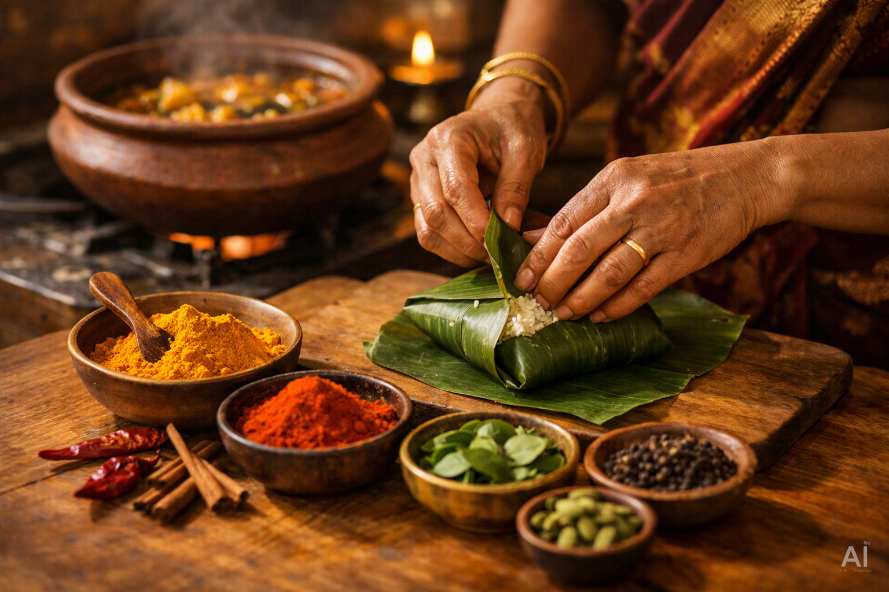

Über uns
Ceylon Spice bringt die authentische tamilisch-sri-lankische Küche direkt zu deinem Event. Nach Familienrezepten aus Jaffna zubereitet, legen wir Wert auf frische Zutaten, kräftige Gewürze und echten Geschmack – egal ob Hochzeit, Firmenfeier oder privates Fest.
Unsere Leistungen
- Catering für Hochzeiten & Feiern
- Firmenevents & Meetings
- Buffet-Aufbau & Live-Kottu-Station
- Lieferung Deutschland weit
- Individuelle Menüplanung nach Wunsch